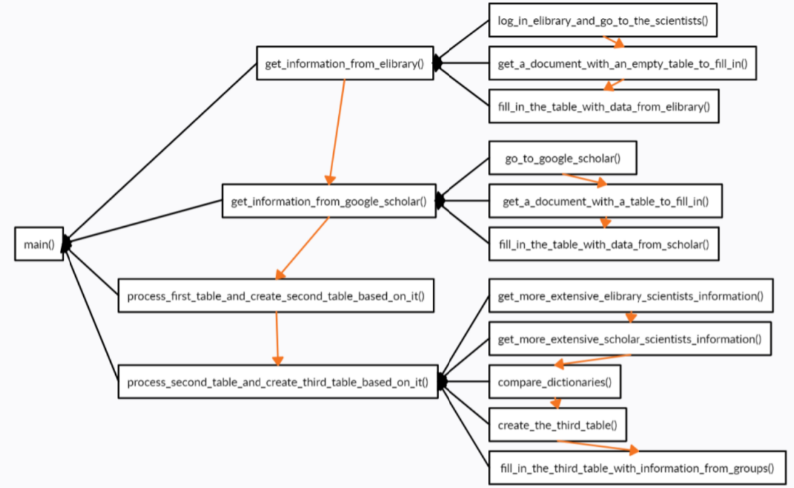

Сравнение электронных библиотек Elibrary.ru и Академии Google
Описана программа, выполняющая выборку данных и статистическую обработку из электронных библиотек eLIBRARY.ru и Академией Google. Проведено сравнение данных в библиотеках и распределение учёных УлГТУ по группам на основе цитирований их трудов. Сделан вывод о значительном совпадении наиболее цитируемых публикаций авторов.
Введение
Список публикаций исследователя и цитируемость представляются в различных электронных библиотеках. Библиотека eLIBRARY.ru формируется усилиями издательств, академия Google формирует профили на основе источников, индексируемых поисковой системой Google. Задачей проведенных экспериментов стало выяснение того, насколько похоже представление данных о публикациях ученых университета в электронных библиотеках, формируемых по разным принципам.
1. Описание исходных данных
Для исследования были выбраны следующие 2 агрегатора:
eLIBRARY.ru – российская научная электронная библиотека, интегрированная с Российским индексом научного цитирования Данные из нее используются для оценки университета министерством, позволяют авторам отслеживать актуальный список публикаций и их цитируемость.
Академия Google (scholar.google.com) – бесплатная поисковая си-стема по полным текстам научных публикаций всех форматов и дисциплин. Профиль исследователя в академии Google позволяет сделать свои труды более доступными.
Данные для анализа были выбраны те, которые присутствуют в обеих системах: перечень публикаций, количество цитирований публикаций учёных. Исследование заключается в сравнении популярных научных агрегаторов по показателям учёных УлГТУ, чьи профили присутствуют в базах данных этих ресурсов, и группировке учёных на основе количества совпадений между их самыми цитируемыми публикациями на обоих ресурсах.
В данной работе использовались средства языка программирования Python, библиотеки для сбора информации с сайтов Selenium WebDriver, библиотеки для фиксирования собранных данных в Microsoft Word. С помощью вышеописанных средств была разработана программа, собирающая информацию с выбранных научных агрегаторов, обрабатывающая и структурирующая извлечённые данные. Модель программы пред-ставлена на рисунке 1 (Оранжевые стрелки означают последовательность выполнения процессов, чёрные – принадлежность подпроцессов к процессам).

Статья дописывается...